Chapter 7. 전송 매체(Transmission Media)¶
0절. 전송 매체¶
전송 매체(Transmission Medium)¶
- 발신지에서 목적지로 정보를 전달할 수 있는 모든 매체
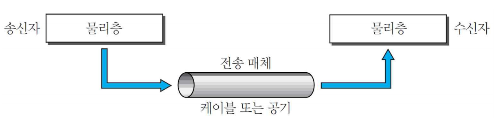
종류¶
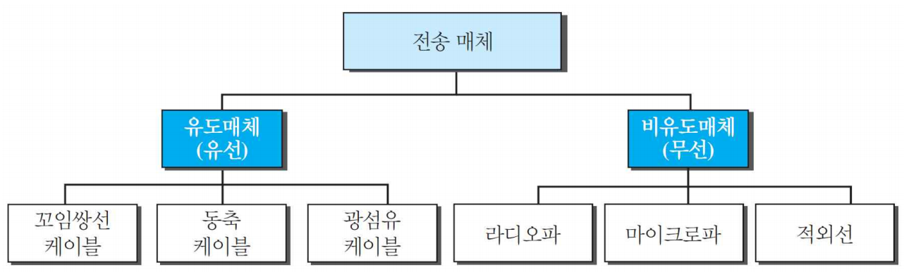
1절. 유도 매체¶
유도 매체(Guided Media)¶
- 한 장치에서 다른 장치로 가는 통로
| 종류 | 영문 |
|---|---|
| 꼬임쌍선 | Twisted-Pair cable |
| 동축 케이블 | Coaxial cable |
| 광섬유 케이블 | Optical Fiber cable |
꼬임 쌍선(Twisted-Pair)¶
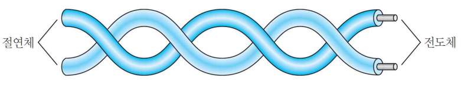
- 2개의 도선(일반적인 구리)
- 각 도선 별 색깔 상이
- 차폐선 케이블
- 주파수 범위
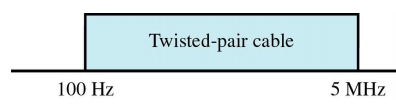
비차폐 꼬임쌍선(UTP : Unshielded Twisted-Pair)¶
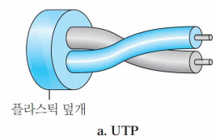
- 오늘날 통신 매체에서 사용하는 가장 일반적인 형태
연결구¶
- RJ45 커넥터
- 전화 잭같은 snap-in 플러그 형태
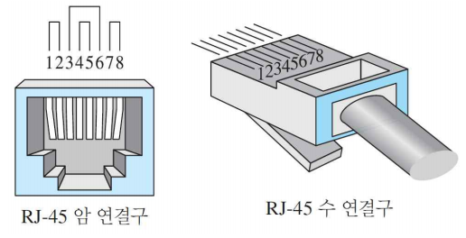
비차폐 꼬임쌍선 범주¶
| 범주 | 규격 | 데이터 전송률(Mbps) | 용도 |
|---|---|---|---|
| 1 | 전화망에 사용 | <0.1 | 전화 |
| 2 | T-1 회선에 사용(전화망 + 전산망) | 2 | T-1 회선 |
| 3 | LAN에 사용 | 10 | LAN |
| 4 | 토큰링 망에 사용 | 20 | LAN |
| 5 | 디지털 전화망 + 전산망 | 100 | LAN |
| 5E | 디지털 전화망 + 전산망 | 125 | LAN |
| 6 | 디지털 전화망 + 전산망 | 200 | LAN |
| 7 | 디지털 전화망 + 전산망(영상신호 전송) | 600 | LAN |
비차폐 꼬임쌍선 성능¶
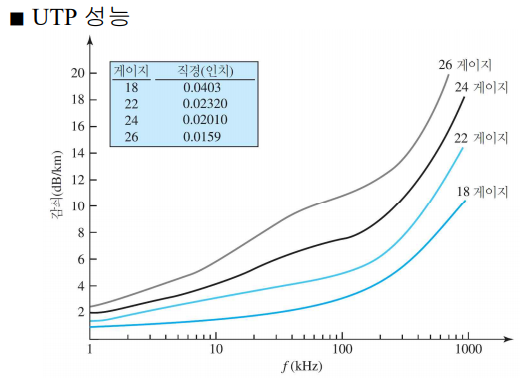
차폐 꼬임쌍선(STP : Shielded Twisted-Pair)¶
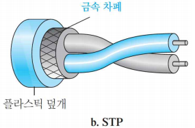
동축 케이블(Coaxial Cable)¶
- 높은 주파수 영역 신호 전달
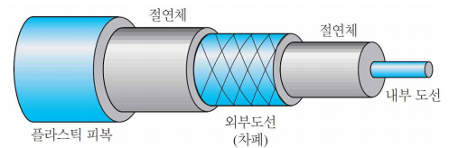
표준(Standard)¶
- 무선국(RG : Radio Government)에서 분류
| 범주 | 임피던스 | 용도 |
|---|---|---|
| RG-59 | 75 Ω | 케이블 TV |
| RG-58 | 50 Ω | 얇은 이더넷 |
| RG-11 | 50 Ω | 굵은 이더넷 |
연결구¶
- BNC 연결구
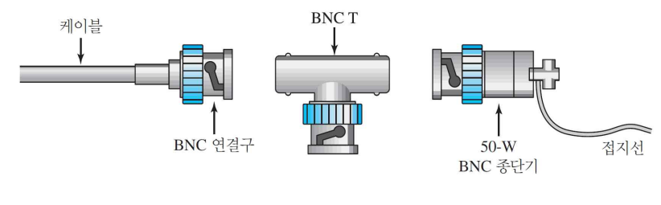
성능¶
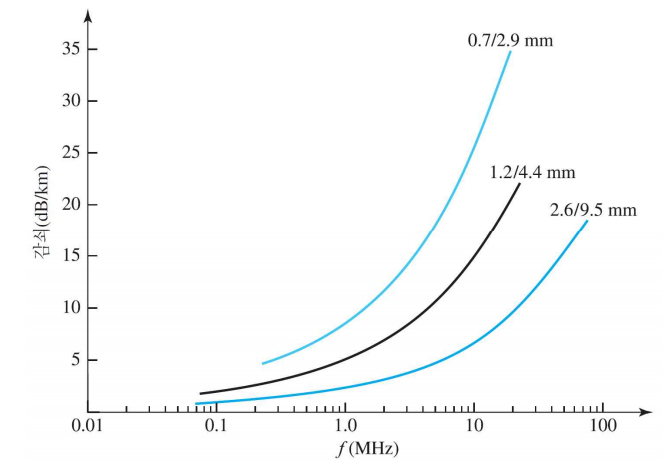
광섬유 케이블(Optical Fiber Cable)¶
- 유리 OR 플라스틱 구성
- 빛의 형태로 신호 전송
- 전자기적인 에너지 형태
- 진공 상태에서 고속
- 300,000 km/s
- 초당 186,000 마일
- 밀도가 높은 매체 통과 시 속도 감소
광선 굴절¶
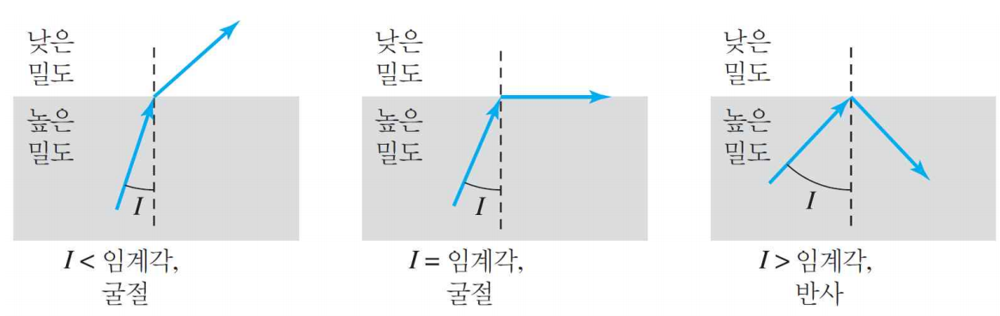
| 용어 | 영어 | 설명 |
|---|---|---|
| 입사각 | Angle of Incidence | 두 물질의 경계면에 수직인 선과 빛이 이루는 각 |
| 임계각 | Critical Angle | 입사한 빛이 경계면을 따라 꺾이는 입사각 |
| 굴절 | Refract | 입사각 < 임계각 |
| 반사 | Reflect | 입사각 > 임계각 |
광섬유 케이블 구성¶
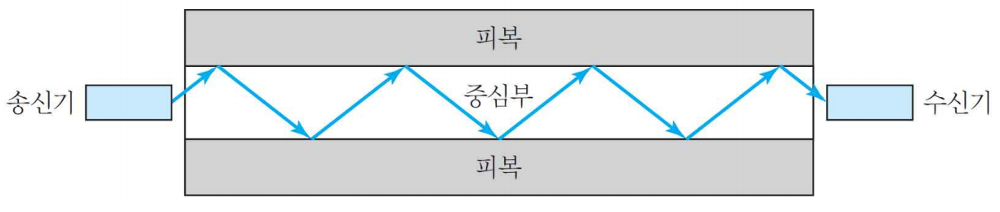
- 채널로 빛을 유도하고자 반사 사용
- 유리 OR 플라스틱 재료
- 내부 코어(core)
- 더 낮은 밀도의 유리나 플라스틱 피복으로 덮인 상태
- 크기와 정밀도가 완전하며 높은 순도
- 외부 자켓
- 테프론 코팅
- 플라스틱 코팅
- 섬유질 플라스틱
- 금속성 망
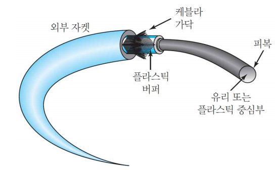
광섬유 케이블 전파 방식(Propagation Mode)¶
- 광채널을 따라 빛의 전달을 위해 2개 모드 지원
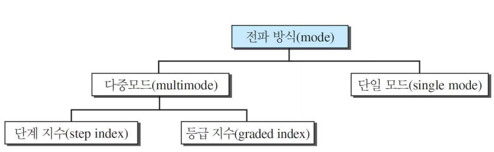
다중 모드(Multimode) : 단계 지수(Step Index)¶
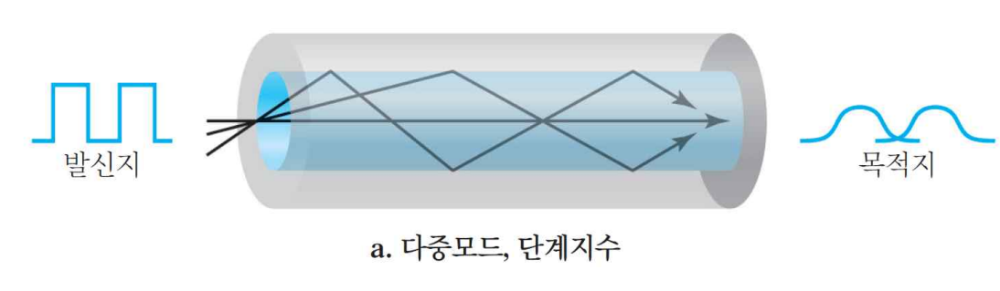
- 일정한 밀도 보유
- 여러 개의 광원이 서로 다른 경로로 코어를 통해 다중 빔 전달
다중 모드(Multimode) : 등급 지수(Graded Index)¶
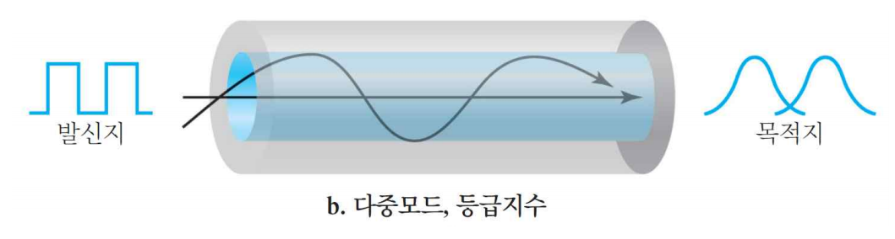
- 다양한 밀도 보유
- 가운데에 가장 높은 밀도 보유
- 바깥쪽으로 갈수록 낮은 밀도 보유
단일 모드(Singlemode)¶
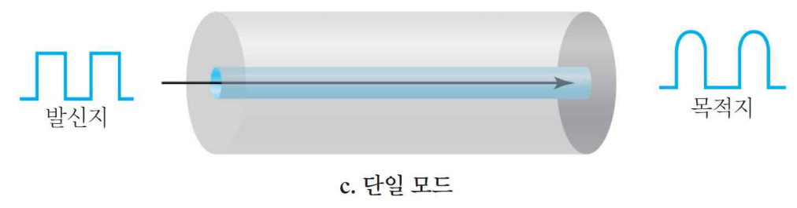
광섬유 유형¶
| 유형 | 중심부(μm) | 피복(μm) | 모드 |
|---|---|---|---|
| 50/125 | 50.0 | 125 | 다중모드, 등급지수 |
| 62.5/125 | 62.5 | 125 | 다중모드, 등급지수 |
| 100/125 | 100.0 | 125 | 다중모드, 등급지수 |
| 7/125 | 7.0 | 125 | 단일모드 |
광섬유 연결구¶
-
가입자 채널 연결구
-
케이블 TV
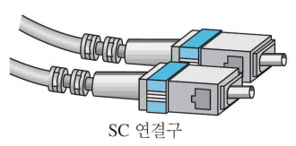
-
직립 단자 연결구
-
케이블 네트워킹 장비
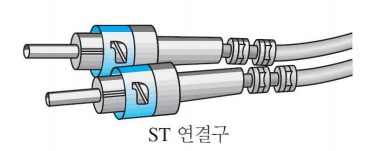
- MT-RJ
- RJ45와 동일한 크기
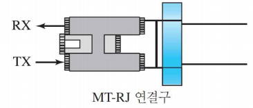
광섬유 케이블 장점¶
- 높은 대역폭
- 낮은 신호 감쇠
- 전자기 방해에 대한 저항력
- 부식에 대한 저항
- 경량
- 도청 방지
광섬유 케이블 단점¶
- 설치 및 유지 보수
- 빛의 단방향
- 가격
2절. 비유도 매체¶
비유도 매체(Unguided Media) : 무선¶
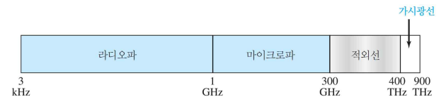
- 물리적 도체 없이 전자기 신호 전송
- == 무선통신
전파¶
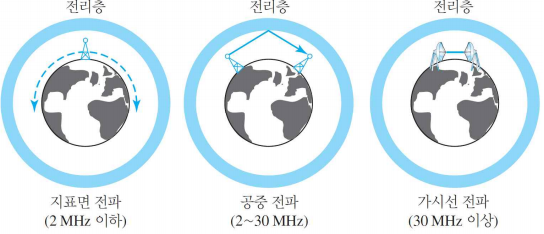
| 전파 종류 | 설명 |
|---|---|
| 지표면 전파 | 대기의 가장 낮은 부분으로 전달 가장 낮은 주파수 사용 |
| 공중 전파 | 높은 주파수의 무선파가 전리층에서 반사되어 지상으로 전송 |
| 가시선(Line-of-Sight) 전파 | 초단파 신호가 안테나에서 안테나로 직접 전송 |
대역¶
| 대역 | 범위 | 전파 | 응용 |
|---|---|---|---|
| VLF(초장파) | 3 ~ 30 kHz | 지표면 | 장거리 무선 항해 |
| LF(장파) | 30 ~ 300 kHz | 지표면 | 무선 등대와 항해 위치 확인기 |
| MF(중파) | 300 kHz ~ 3 MHz | 공중 | AM 라디오 |
| HF(단파) | 3 ~ 30 MHz | 공중 | 시민 대역(CB), 배/항공 통신 |
| VHF(초단파) | 30 ~ 300 MHz | 공중과 가시선 | VHF TV, FM 라디오 |
| UHF(극초단파) | 300 MHz ~ 3 GHz | 가시선 | UHF TV, 휴대 전화, 페이징, 인공위성 |
| SHF(마이크로파) | 3 ~ 30 GHz | 가시선 | 위성통신 |
| EHF(밀리미터파) | 30 ~ 300 GHz | 가시선 | 레이더, 인공위성 |
유형¶
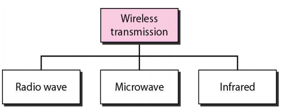
라디오파¶
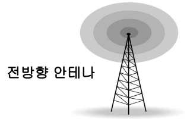
- 3KHz ~ 1GHz
- 전방향 전파
- 원거리 전송
- 같은 주파수의 다른 안테나 방해를 받음
- 저주파나 중파의 라디오파는 벽 통과
- 전체 대역이 정부 기관에 의해 규제
- 멀티 캐스트 통신에 이용
- 라디오
- 텔레비전
- 호출기
- 페이징 시스템
마이크로파¶
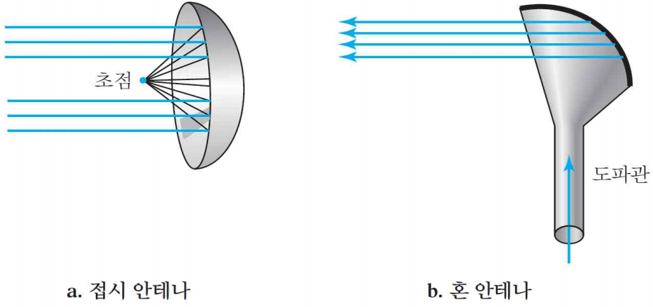
- 1 GHz ~ 300 GHz의 전자기파
- 단방향 전파, 가시선 전파
- 벽 통과 불가
- 유니 캐스트(Unicast : One-to-One) 통신
- 휴대 전화
- 위성 통신
- 무선 LAN
적외선파¶
- 300GHz ~ 400 THz
- 높은 주파수로 벽 통과 불가
- 서로 다른 시스템에 의해 방해 X
- 외부에서 사용 불가
- 넓은 대역폭으로 높은 데이터 전송률의 디지털 데이터 전송
- 폐쇄된 공간의 단거리 통신
- 가시선 전파 사용